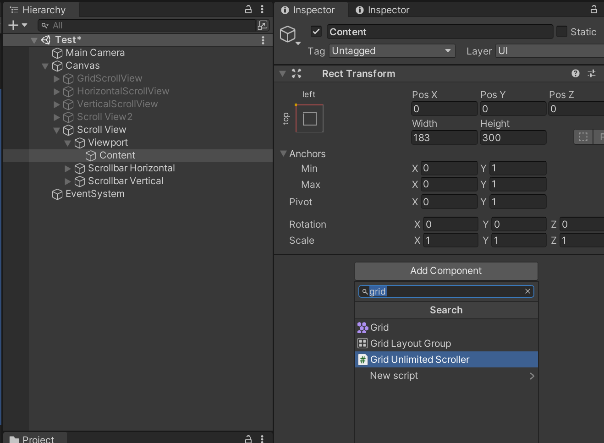

Unlimited Scroll UI
version 1.5.0
Summary
A plugin in Unity that let you easily create scroll views with unlimited items. See in asset store.
Quick Setup
Step 1: Add “UI/Scroll View” from Add GameObject menu.

Step 2: Add UnlimitedScroller with your desired auto layout type.

Step 3: Drag and drop the scroll view to Scroll Rect field. Set initial cell cache count.
If you use grid scroller, you can also change its alignment.

Step 4: Prepare a cell prefab that has the RegularCell script or your custom script that implements the ICell interface.

Step 5: To test it out immediately, add a ScrollerTest script below Unlimited Scroller, reference to your cell and set total count.
References
Please go to this website for full reference: https://brian-jiang.github.io/UnlimitedScrollUI/api/UnlimitedScrollUI.html
Supports
If you have any questions, please post here
or comment here
Or email me directly at: bjjx1999@live.com
Thank you for your support!